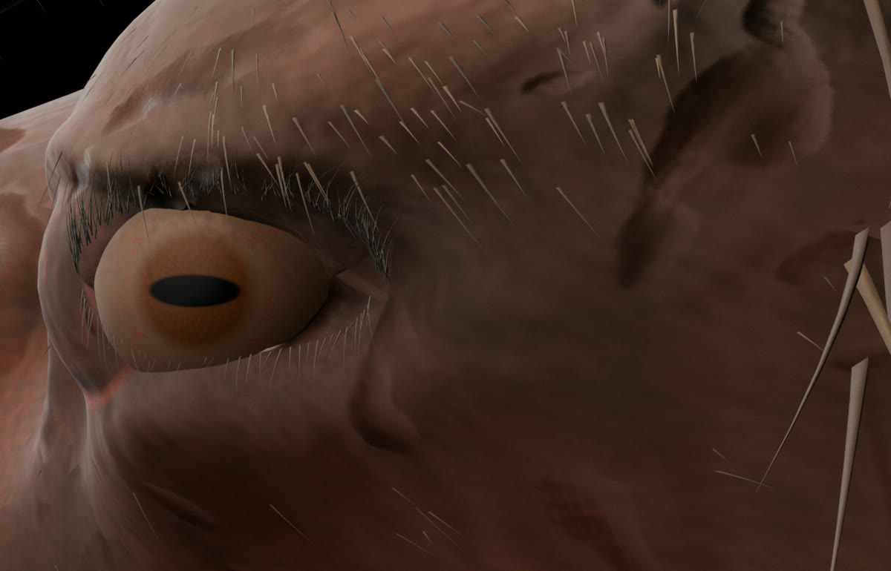
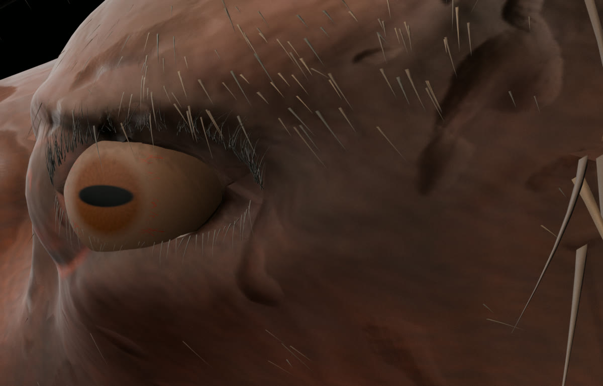
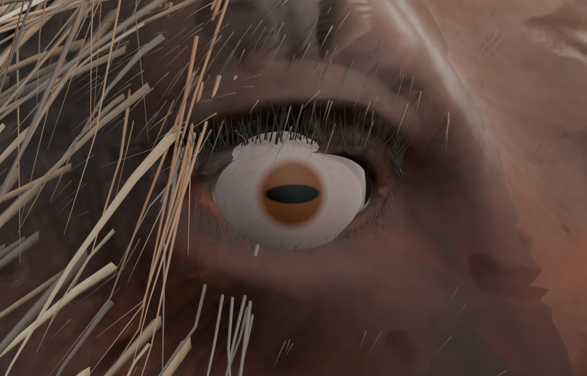
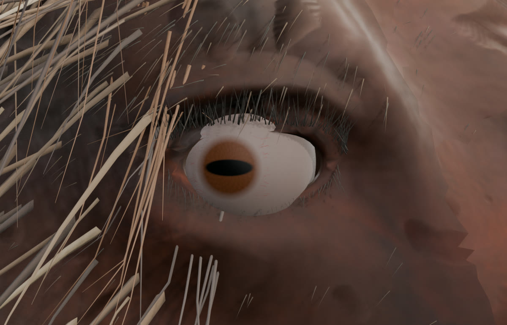
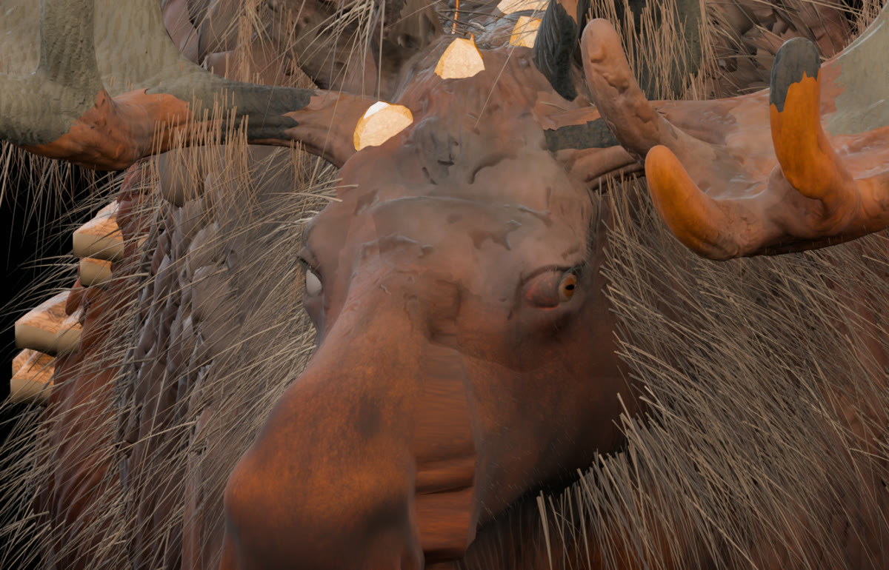

Лось V32Q — исправленные глаза с капиллярами
Это реальные рендеры отредактированной 3D-модели Blender, не концепт. У правого глаза убраны аномальные пики сетки возле носа, левое верхнее веко сглажено. На глазных яблоках — отдельные 4K-карты разветвлённых сосудов на склере, без красных штрихов на радужке. Оба глазных яблока остаются сферическими и синхронно вращаются внутри неподвижных глазниц.
ЛЕВЫЙ ГЛАЗПРАВЫЙ ГЛАЗ
СкульптПравый угол: среднее отклонение проблемных вершин 6,0 → 1,0 мм. Доработаны также носовая складка и левое веко
PBR-материалыДве отдельные карты 4K сосудов, привязанные к UV и поворачивающиеся вместе с глазными яблоками
АнимацияТри клипа в GLB, включая EYES_LOOK_STRAIGHT_LEFT_LOOP с двумя каналами вращения. Проверены все 60 кадров
Оба глаза — прямо и влево




Морда спереди
